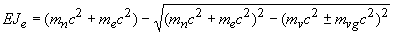
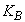
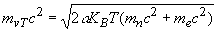
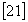

|
В. И. ЕЛИСЕЕВ ВВЕДЕНИЕ В МЕТОДЫ ТЕОРИИ
ФУНКЦИЙ ПРОСТРАНСТВЕННОГО КОМПЛЕКСНОГО ПЕРЕМЕННОГО |
|
ГЛАВА 9. СВЕРХПРОВОДИМОСТЬ
9.1. Общие положения.
К настоящему времени создано большое число сверхпроводящих керамик. Сверхпроводящие керамики содержат в своем составе редкоземельные элементы Y, Ва,
Lа, Nd, Sm, Eu, Cd, Ho, Er, Tm, Lu. Структура этих сверхпроводников задается формулой , где за М обозначены элементы редких земель. Стехиометрический состав выражается коэффициентами в виде индексов у символов элементов. Коэффициенты могут быть различными. Для этих керамик экспериментальные исследования дают температуру сверхпроводящего перехода от 86К до 98К.Исследованы 5-ти компонентные керамики
при температура сверхпроводящего перехода при ,при .

Электрические свойства соединения согласно современной теории зависят от зон проводимости. Зоны проводимости в свою очередь зависят от структуры электронных оболочек атома как компонента соединения. Экспериментальные исследования сверхпроводимости дают основание считать, что формирование зон проводимости зависит также от масс атомных ядер. Кристаллическая решетка
N-компонентного соединения формируется также в зависимости от масс ядер и их структуры электронных оболочек и свободных электронов в зоне проводимости.Атом редкоземельных элементов имеет на внешней орбите в Р оболочке в состоянии 6
s два электрона. Предыдущая оболочка О является незаполненной. Пол-оболочки 5d, 5f, 5g являются незаполненными.Рентгеноструктурные исследования показали, что кристаллическая структура высокотемпературных сверхпроводников не изменяется при переходе через
. Следовательно явление сверхпроводимости не связано со структурными изменениями.Однако кристаллическая структура соединения может остаться без изменения, в то время как изменится модель атомного ядра. Согласно исследованиям главы 5 после элемента ксенона
Модель неустойчива и может менять количество циклонных вихрей в своей структуре. В связи с этим, неустойчивое количество циклонных вихрей может определять перестройку соединения при переходе в сверхпроводящее состояние без изменения кристаллической решетки. Внутреннее энергетическое поле ядра атома может измениться так, что произойдет перестройка структуры ядра. При выводе формулы энергии связи ядер атомов и их изотопов было доказано, что
Электронные оболочки атома и электроны на них через свои обменные кванты взаимодействуют с внутренним обменным квантом ядра атома. Это взаимодействие и может привести к перестройке атомного ядра не затрагивая изменения кристаллической решетки соединения.
В главах 6,7,8 использовался при расчетах энергии атомных ядер, при исследовании радиоактивных превращений ядер, при исследовании кваркового и глюонных полей микрочастиц оператор взаимодействия структурного образования (смотри 7.5). Согласно этого оператора энергия связи
электрона с ядром атома массой|
9.1. |
где
- полевая энергия обменного кванта электрона на орбите с ядром атома.Обменный квант состоит из суммы энергий выделяемых в пространство атома массой ядра и массой электрона.
|
9.2. |
При наличии внешнего воздействия полевая внутренняя энергия атома в виде обменного кванта изменяется под действием внешнего обменного кванта
.В связи с этим формула (1) запишется в виде
|
 |
9.3. |
Внешнее воздействие может как увеличить так и уменьшить величину обменного кванта электрона с ядром атома. Если воздействие внешнего поля станет равным по величине внутреннему обменному кванту
|
9.4. |
то энергия связи электрона с ядром станет равной нулю
произойдет переход электрона в зону проводимости соединения.
В первом и достаточно точном приближении можно записать
Если
, то|
9.5. |
или в переводе на импульсное представление
будем иметь|
9.6. |
Энергия равна одной второй квадрата импульса деленного на массу, к которой приложен импульс.
Любой вид энергии внешнего воздействия имеет свой импульс и величину обменного кванта . При рассмотрении температурного внешнего поля необходимо ввести обменный квант температурного внешнего воздействия на систему ядро-электрон
, так что можно записать|
9.7. |
где
- коэффициент Больцмана, - коэффициент определяемый степенью свободы системы (1, 3/2,…), в дальнейшем при расчете будет обоснован.
- коэффициент определяемый степенью свободы системы (1, 3/2,…), в дальнейшем при расчете будет обоснован.
Из формулы (7) следует

Подставляя это выражение в формулу (4) получим
|
9.8. |
Если определен минимальный обменный квант
В этом случае температура становится критической
,определяющей свойства соединения.Проводники, сверхпроводники и другие соединения имеют свои внутренние энергетические поля, которые оцениваются обменными квантами атомов, входящих в эти соединения как компоненты. Если внешнее воздействие, в данном случае это температурное поле, становится соизмеримым с обменным квантом одного или несколько компонентов соединения, то происходит переход электрона или электронов в зону проводимости соединения.
Для кинетической энергии электрона обменный квант
можно рассчитать последовательно применяя те же формулы|
откуда |
9.9. |
Энергия магнитного поля
также может быть оценена величиной обменного кванта , который возникает от напряженности магнитного поля в объеме системы ядро - электрон, так что|
9.10. |
И в этом случае имеем
|
9.11. |
Аналогично обстоят дела и с электрической энергией ЕЕ и ее обменным квантом.
Если в формуле (3) обменный квант внешнего воздействия заменить суммой обменных квантов температурного и магнитных полей
, то получим условие перехода в зону проводимости в виде
|
|
9.12. |
При выполнении этого условия при одних и тех же Т и Н у одного или несколько компонентов в соединении произойдет переход электронов в зону проводимости, ибо для них будет выполняться условие
.При
имеем максимальное значение температуры , при которой происходит переход электрона в зону проводимости. Будут выполняться условияПри
выполняется условие в виде и напряженность магнитного поля будет максимальна. В результате имеем две точки на фазовой диаграммеФазовая диаграмма в координатах
описывается в теории сверхпроводников формулой (11,4 Критическое магнитное поле стр406)Это экспериментальная зависимость для различных сверхпроводников. Если напряженность магнитного поля превышает некоторую критическую величину
, то сверхпроводящее состояние разрушается и соединение переходит в нормальное состояние проводимости или изолятора. -приведенная к нулевой температуре напряженность магнитного поля.Формулы 9.8, 9.9, 9.11 дают возможность вычислить температуру, скорость электрона, напряженность магнитного поля, если известен минимальный обменный квант одного из компонентов сверхпроводника.
В простейшем случае
.
Внутренний обменный квант кристалла есть функция энергетических масс и энергий ионизации электронов атомов, входящих в соединение со своими стехиометрическими коэффициентами, а следовательно также есть функция массы всего кристалла.
К настоящему времени накоплен значительный материал по структурам оболочек атомов, по их ионизационному потенциалу. Справочники
Расчет масс ядер производится по классическим формулам ядерной физики
.|
9.14. |
где
Z,N соответственно количество протонов и нейтронов в ядре атома,соответственно масса протона и масса нейтрона.
где
Все коэффициенты в Мэв.- для четно четных ядер
для нечетных ядер
для нечетно-нечетных ядер.
Мэв
Мини оглавление:
[0], [1.1.1, 1.1.2, 1.1.3, 1.1.4, 1.1.5, 1.1.6, 1.1.7, 1.1.8, 1.2, 1.2.1, 1.2.2, 1.2.2.a, 1.2.2.b, 1.2.2.c, 1.2.2.d, 1.2.2.e, 1.2.2.f, 1.2.2.g, 1.2.2.h, 1.2.3, 1.3.1, 1.3.2, 1.3.3, 1.3.4, 1.3.5, 1.3.6, 1.4.1, 1.4.2, 1.5, 1.6, 1.7.1, 1.7.2, 1.7.3.1, 1.7.3.2, 1.7.3.3, 1.7.4.1, 1.7.4.2, 1.8.1], [2.1, 2.2],[3.1, 3.2, 3.3, 3.4.1, 3.4.2, 3.4.3, 3.4.4, 3.4.5],[4.1, 4.2, 4.3, 4.4],[5.1, 5.1.Рис.52, 5.2, 5.3, 5.4, 5.4.Т1, 5.4.Т2, 5.4.Т3, 5.5.1, 5.5.2, 5.5.3, 5.5.4],[6.1.1, 6.1.2, 6.2.1, 6.2.2, 6.2.3, 6.2.4, 6.2.5, 6.3, 6.4.1, 6.4.2, 6.5.1, 6.5.2],[7.1, 7.2, 7.3, 7.4, 7.5, 7.6, 7.7.1, 7.7.2, 7.8.1, 7.8.2, 7.8.3, 7.9],[8.1, 8.2.1, 8.2.2, 8.3, 8.4, 8.5, 8.6, 8.6.T1, 8.7, 8.8.1, 8.8.2, 8.8.3, 8.9.1, 8.9.2, 8.9.3, 8.10, 8.10.T2, 8.10.T3],[9.1, 9.2, 9.3, Рис.88, 89, 90, 91, 92, 93, 94, 95, 96, 97, 98, 99, 100],[10.1, 10.2, 10.3, 10.4, 10.5, 10.6, 10.7, 10.8, 10.9, 10.10, 10.11, 10.12, 10.13, 10.14, 10.15.1, 10.15.2, 10.16.1, 10.16.2, 10.17, 10.18],[11]
Размещенный материал является электронной версией книги: © В.И.Елисеев, "Введение в методы теории функций пространственного комплексного переменного", изданной Центром научно-технического творчества молодежи Алгоритм. - М.:, НИАТ. - 1990. Шифр Д7-90/83308. в каталоге Государственной публичной научно-технической библиотеки. Сайт действует с 10 августа 1998.
E-mail: mathsru@gmail.com